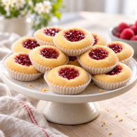

3. Hallongrottor

Hallongrottor är mördegskakor med en liten grop fylld med hallonsylt. De är enkla att baka och uppskattade till fika.
Ger: cirka 20–24 kakor.
Ingredienser
- 200 g smör eller margarin
- 1 dl strösocker
- 2 tsk vaniljsocker
- 4,5 dl vetemjöl
- 1 tsk bakpulver
- 1 dl fast hallonsylt
Gör så här
- Värm ugnen till 200 °C.
- Arbeta snabbt ihop smör, socker, vaniljsocker, mjöl och bakpulver.
- Rulla degen till små bollar och lägg dem i små kakformar.
- Gör en grop i varje kaka med ett finger eller skaftet på en sked.
- Fyll groparna med hallonsylt.
- Grädda i 12–15 minuter och låt kakorna svalna på ett galler.